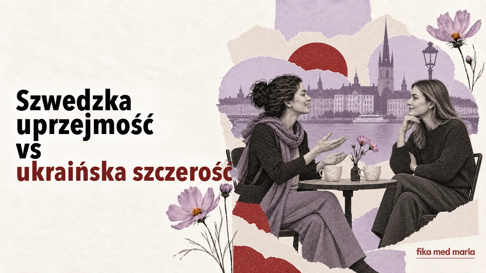

Szwedzka uprzejmość może brzmieć jak obojętność – a ukraińska szczerość jak presja

Ukrainka pyta nową znajomą: „Jesteś mężatką? A dzieci masz? A dlaczego nie masz?” Może to robić nie z ciekawości, ale po to, by szybciej się zbliżyć i znaleźć wspólny temat.
Szwedka odpowiada krótko i nie ciągnie już rozmowy. Ukrainka myśli: „Jaka zimna”. Szwedka myśli: „Dlaczego ktoś, kogo prawie nie znam, zadaje mi tak osobiste pytania?”
Żadna z nich nie chciała urazić drugiej. Po prostu dwie kultury inaczej określają, czym jest ciepło, uprzejmość i szacunek.
Dystans nie zawsze oznacza obojętność
U Ukraińców troska w wielu sytuacjach jest aktywna: doradzić, nakarmić, pomóc, wypytać, upewnić się, że ktoś na pewno niczego nie potrzebuje.
W Szwecji troska nierzadko przybiera postać szacunku dla czyjejś autonomii:
- nie zadawać zbyt osobistych pytań;
- nie dawać nieproszonych rad;
- nie dzwonić bez uprzedzenia;
- pozwolić drugiej osobie odmówić bez wyjaśnień;
- umawiać się na spotkanie z wyprzedzeniem;
- nie wymagać natychmiastowej odpowiedzi.
Z zewnątrz może to sprawiać wrażenie chłodu. Ale logika jest inna: „Nie wkraczam w twoje życie, dopóki sama mnie do niego nie zaprosisz”.
Zaproszenie to umowa, a nie rytuał
W języku ukraińskim „заходьте якось у гості” (wpadnijcie kiedyś do nas) może być wyrazem sympatii bez konkretnego planu. W Szwecji zaproszenie częściej staje się realne wtedy, gdy pojawiają się data i godzina.
Vi borde ses någon gång.
Powinniśmy się kiedyś spotkać.
To miłe słowa, ale jeszcze nie plan.
Vill du komma hem till oss på middag nästa lördag?
Chcesz przyjść do nas na kolację w przyszłą sobotę?
To już jest zaproszenie.
Dlatego nie warto się obrażać, jeśli po Vi borde ta en fika nikt od razu nie otwiera kalendarza. Ale jeśli chcesz się spotkać, możesz spokojnie ustalić konkrety:
Ja, gärna! Passar nästa torsdag?
Rada może zabrzmieć jak ocena
Zdanie „Musisz cieplej ubrać dziecko” w ukraińskim kontekście może być zwykłą troską. Dla drugiej osoby może to zabrzmieć jak ocena jej decyzji rodzicielskich.
Łagodniejsze szwedzkie sformułowania zostawiają rozmówcy wybór:
- Vill du höra hur jag brukar göra? – Chcesz usłyszeć, jak ja to zwykle robię?
- Jag vet inte om det passar dig, men… – Nie wiem, czy ci to będzie pasować, ale…
- Säg till om du vill ha hjälp. – Daj znać, jeśli zechcesz pomocy.
Ostatnie zdanie jest ważne: ktoś proponuje pomoc, ale nie przejmuje kontroli.
Odmowa bez długiego tłumaczenia się
Dla wielu Ukraińców krótkie „nie mogę” wydaje się niegrzeczne, dlatego wyjaśniamy powody. W szwedzkiej komunikacji wystarczy powiedzieć:
Tack för inbjudan, men jag kan tyvärr inte.
Dziękuję za zaproszenie, ale niestety nie mogę.
Szczegółowa opowieść o wszystkich okolicznościach nie zawsze jest potrzebna. Granicę można wyznaczyć uprzejmie nawet bez usprawiedliwień.
Jak nie zamieniać różnic kulturowych w stereotypy
Nie wszyscy Ukraińcy zadają osobiste pytania. Nie wszyscy Szwedzi planują spotkania z trzytygodniowym wyprzedzeniem. Temperament, pokolenie, miasto, rodzina i konkretne relacje są zawsze ważniejsze niż narodowy schemat.
Kultura nie definiuje człowieka. Podpowiada tylko, dlaczego to samo zachowanie może mieć różne znaczenie.
Zamiast pytać „dlaczego Szwedzi są tacy zimni?”, lepiej zapytać:
Jaki sygnał szacunku próbuje mi przekazać ta osoba – nawet jeśli przywykłam do tego, że szacunek wygląda inaczej?
Chcesz zaproponować nowej znajomej pomoc przy przeprowadzce, nie wywierając presji. Które zdanie jest najlepsze?
- Jag kommer i morgon och hjälper dig.
- Säg till om du vill ha hjälp med flytten.
- Du klarar inte det själv.
Pokaż odpowiedź
Poprawna odpowiedź: 2.
Nie chodzi o to, żeby „stać się Szwedką”. Chodzi o to, by rozumieć kod rozmówcy i mieć dość narzędzi językowych, aby pozostać sobą. Właśnie to ćwiczymy w Fika med Maria. Kursy szwedzkiego.
Czy zadawanie Szwedom osobistych pytań jest nieuprzejme?
To zależy od stopnia zażyłości. Na początku znajomości lepiej pozwolić drugiej osobie samej zdecydować, ile osobistych rzeczy chce o sobie opowiedzieć.
Jak okazać ciepło po szwedzku?
Słuchać, pamiętać, co ktoś powiedział, dotrzymywać ustaleń, proponować konkretną pomoc i szanować odpowiedź.